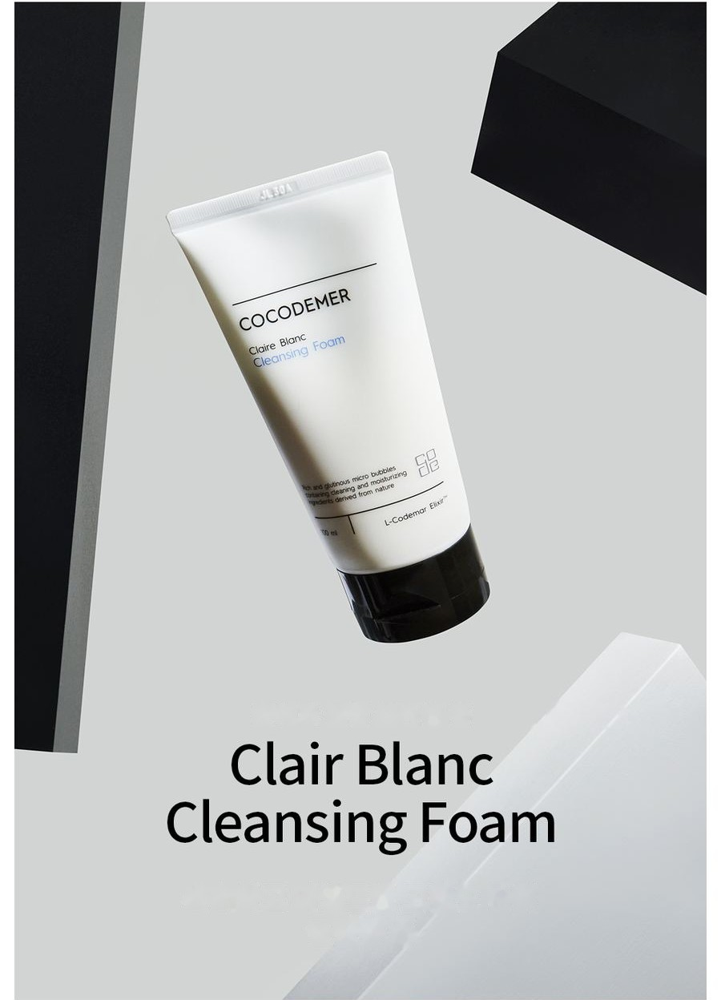

COCODEMER Clair Blanc Cleansing Foam
| Contenido | 100ml |
|---|---|
| Indicado para | Todo tipo de piel |
| Tecnología clave | L-CODEMAR ELIXIR™ |
| Fabricante · Distribuidor responsable | JUNGCOS CO., LTD. / COCODEMER CO., LTD. |
Este producto se desarrolló como parte de nuestra línea de cosmética personalizada. Actualmente no está a la venta. Para consultas sobre una nueva producción o una renovación, contáctenos a través de Consulta B2B.

Una espuma limpiadora suave e hidratante, con burbujas densas y elásticas
Una espuma limpiadora muy hidratante, con microburbujas abundantes y esponjosas
Sus agentes limpiadores de origen natural cuidan con suavidad la piel sensibilizada por el entorno externo.
Los ingredientes hidratantes forman un velo de hidratación que limita la pérdida de humedad, de modo que la piel se mantiene suave y flexible, sin tirantez después de la limpieza.
Una microespuma abundante y esponjosa limpia a fondo, hasta las impurezas retenidas en los poros.
Una espuma densa y en capas arrastra las impurezas de la superficie y disuelve el sebo oxidado del interior de los poros. La piel queda limpia e hidratada, sin la tirantez que puede dejar una limpieza intensa.
Las burbujas microfinas se vuelven más densas y abundantes al deslizarse sobre la piel, y ayudan a eliminar las impurezas y la acumulación de células muertas de un cutis apagado y de tacto áspero. La limpieza deja la piel hidratada y flexible.
Los agentes limpiadores de origen natural y diversos ingredientes hidrosolubles hidratantes y nutritivos dejan la piel lisa e hidratada después de la limpieza y, como no quedan residuos que penetren en la piel, esa hidratación se mantiene.
* Lo anterior se aplica únicamente al ingrediente específico.
Código del activo clave
- CaCentella AsiaticaCalma de la piel
- HiHydrogenated LecithinAcondicionamiento de la piel
- BtBetaineHidratación intensa
- CnCeramide NPRefuerzo de la barrera
Un 43 % de agentes limpiadores de origen natural procedentes del aceite de coco ayuda a crear una espuma densa y abundante. Elimina los residuos de maquillaje y las impurezas del interior de los poros sin irritar la piel.
Los humectantes hidrosolubles forman una barrera que minimiza la pérdida de agua, para que la piel retenga más hidratación, y ayudan a calmar la piel sensibilizada.
* Lo anterior describe los ingredientes, no el producto terminado.
Ver la ficha del ingrediente →
L-CODEMAR ELIXIR™
Tecnología propia de COCODEMER.
Nuestra inigualable tecnología de encapsulación en emulsión de nanogel multicapa mantiene los activos principales (agua de coco, fitoesteroles, 20 aminoácidos y extracto de miel) en un complejo estable. Después, ese complejo se integra en una forma liposomal afín a la piel que reproduce la propia estructura cutánea y maximiza la eficiencia del transporte hacia la piel.
L-Codemar Elixir™ refuerza la unión entre las células de la piel. Restaura la barrera dañada y forma una película protectora resistente, para que la hidratación dure más tiempo.

Texto de la imagen anterior
L-CODEMAR ELIXIR™
- AGUA DE COCO
- EXTRACTO DE MIEL
- 20 TIPOS DE AMINOÁCIDOS
- FITOESTEROL

Texto de la imagen anterior
- Microbios, polvo fino, polvo amarillo, contaminantes y contaminación del aire
- Pérdida excesiva de agua
Piel dañada
Los lípidos intercelulares dañados debilitan los enlaces entre las células epidérmicas
- Aporte de lípidos intercelulares ↑
- Activos
- Protege contra el estrés externo y los contaminantes
- Menor pérdida de agua
Piel sana
Los lípidos repuestos restauran la matriz intercelular → enlaces entre células más fuertes
Modo de uso
- Tome una cantidad adecuada en la palma de la mano y forme una espuma abundante con agua.
- Limpie suavemente, masajeando el rostro.
- Enjuague bien con agua tibia.
Una espuma limpiadora muy hidratante, con microburbujas abundantes y esponjosas
Sus agentes limpiadores de origen natural cuidan con suavidad la piel sensibilizada por el entorno externo.
Los ingredientes hidratantes forman un velo de hidratación que limita la pérdida de humedad, de modo que la piel se mantiene suave y flexible, sin tirantez después de la limpieza.
Una microespuma abundante y esponjosa limpia a fondo, hasta las impurezas retenidas en los poros.
Una espuma densa y en capas arrastra las impurezas de la superficie y disuelve el sebo oxidado del interior de los poros. La piel queda limpia e hidratada, sin la tirantez que puede dejar una limpieza intensa.
Las burbujas microfinas se vuelven más densas y abundantes al deslizarse sobre la piel, y ayudan a eliminar las impurezas y la acumulación de células muertas de un cutis apagado y de tacto áspero. La limpieza deja la piel hidratada y flexible.
Los agentes limpiadores de origen natural y diversos ingredientes hidrosolubles hidratantes y nutritivos dejan la piel lisa e hidratada después de la limpieza y, como no quedan residuos que penetren en la piel, esa hidratación se mantiene.
Un 43 % de agentes limpiadores de origen natural procedentes del aceite de coco ayuda a crear una espuma densa y abundante. Elimina los residuos de maquillaje y las impurezas del interior de los poros sin irritar la piel.
Los humectantes hidrosolubles forman una barrera que minimiza la pérdida de agua, para que la piel retenga más hidratación, y ayudan a calmar la piel sensibilizada.
* Lo anterior describe los ingredientes, no el producto terminado.
L-CODEMAR ELIXIR™
Tecnología propia de COCODEMER. Nuestra inigualable tecnología de encapsulación en emulsión de nanogel multicapa mantiene los activos principales (agua de coco, fitoesteroles, 20 aminoácidos y extracto de miel) en un complejo estable. Después, ese complejo se integra en una forma liposomal afín a la piel que reproduce la propia estructura cutánea y maximiza la eficiencia del transporte hacia la piel. L-Codemar Elixir™ refuerza la unión entre las células de la piel. Restaura la barrera dañada y forma una película protectora resistente, para que la hidratación dure más tiempo.
①Tome una cantidad adecuada en la palma de la mano y forme una espuma abundante con agua. ②Limpie suavemente, masajeando el rostro. ③Enjuague bien con agua tibia.
| Contenido neto (volumen o peso) | 100ml |
|---|---|
| Indicado para | Todo tipo de piel |
| Vida útil / período después de la apertura | 30 meses desde la fecha de fabricación; usar dentro de los 12 meses posteriores a la apertura |
| Modo de uso | Tome una cantidad adecuada, forme abundante espuma con agua, masajee ligeramente todo el rostro y enjuague con agua tibia. |
| Fabricante de cosméticos | JUNGCOS CO., LTD. |
| Distribuidor responsable | COCODEMER CO., LTD. |
| País de origen | República de Corea |
| Lista completa de ingredientes (INCI) | Methylpropanediol, Myristic Acid, Water, Glycerin, Cocos Nucifera (Coconut) Water, Potassium Hydroxide, Lauric Acid, Palmitic Acid, Potassium Cocoyl Glycinate, Stearic Acid, PEG-40 Stearate, Cocamidopropyl Betaine, Glyceryl Stearate, PEG-100 Stearate, Sodium Methyl Cocoyl Taurate, Centella Asiatica Extract, Ficus Carica (Fig) Fruit Extract, Honey Extract, Mentha Piperita (Peppermint) Leaf Extract, Mentha Suaveolens (Apple Mint) Leaf Extract, Rosmarinus Officinalis (Rosemary) Leaf Extract, Salvia Officinalis (Sage) Leaf Extract, Hydrogenated Lecithin, 1,2-Hexanediol, Alanine, Arachidic Acid, Arginine, Aspartic Acid, Butylene Glycol, Capric Acid, Carnitine, Ceramide NP, Citrulline, Glutamic Acid, Glutamine, Glycine, Isoleucine, Leucine, Methionine, Oleic Acid, Ornithine, PEG-14M, Phenylalanine, Phytosterols, Polyquaternium-39, Proline, Serine, Sodium Chloride, Threonine, Tocopheryl Acetate, Trisodium EDTA, Tryptophan, Tyrosine, Valine, Parfum, Sodium Benzoate |
| Aprobación como cosmético funcional | No aplicable |
| Precauciones | 1. Si durante o después del uso, o tras la exposición a la luz solar directa, la zona tratada presenta manchas rojas, hinchazón, picor u otras reacciones anormales, consulte a un especialista. 2. Evite su uso sobre piel lesionada o con heridas. 3. Conservación y manipulación a) Mantener fuera del alcance de los niños. b) Conservar alejado de la luz solar directa. |
| Garantía de calidad | En caso de defecto, la compensación se realiza de acuerdo con las Normas de Resolución de Conflictos de Consumo publicadas por la Comisión de Comercio Justo de Corea. |
| Atención al cliente | 010-3307-9341 / cocodemer@cocodemer.co.kr |
* Información obligatoria según las normas coreanas de etiquetado y publicidad de cosméticos. Esta es una traducción de referencia; para la declaración de ingredientes certificada, el CPSR o el CoA, póngase en contacto con nosotros a través de la consulta B2B.